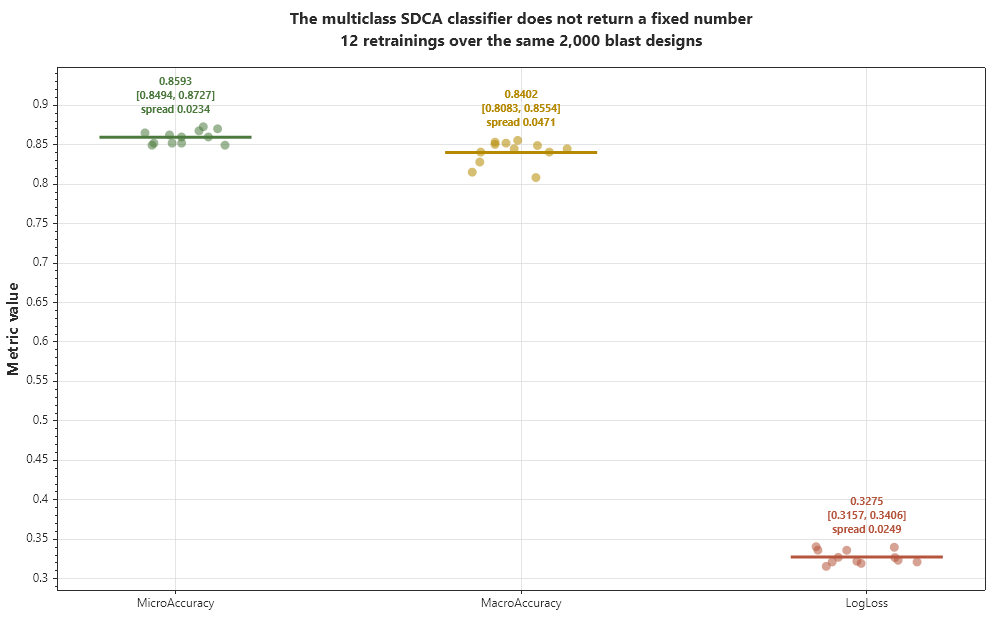
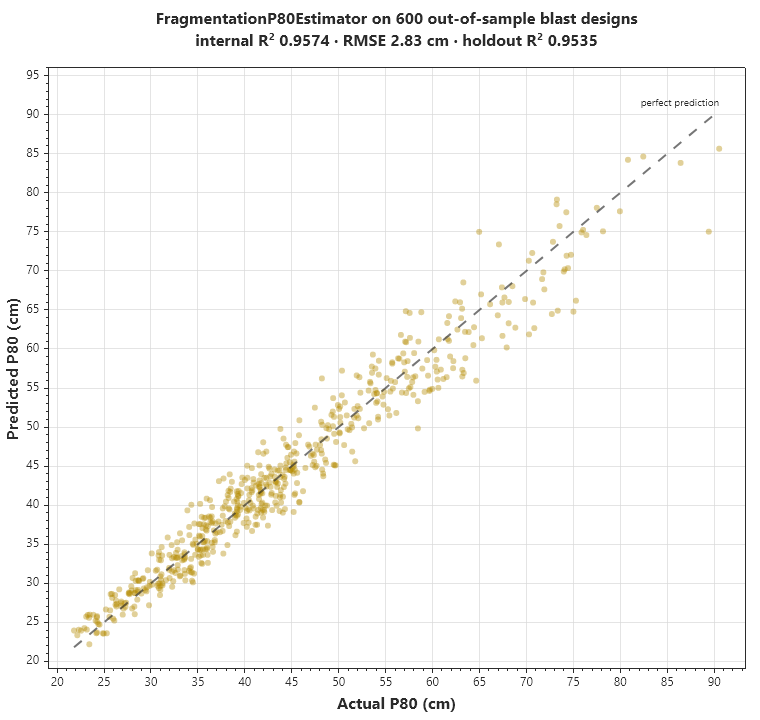
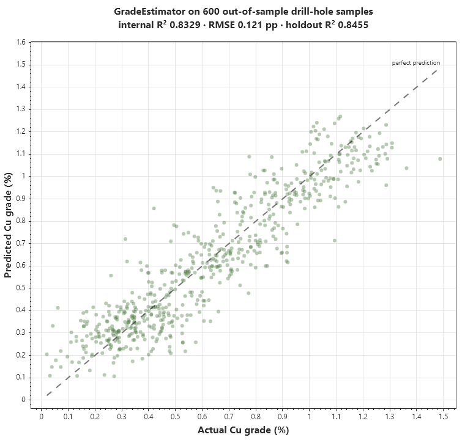

And the comparison holds up to being repeated, which is worth checking before acting on a 0.027 R² difference. Over 12 retrainings on the same 2,000 samples, FastTree returns 0.8329 every single time and Online Gradient Descent 0.8240 every single time — both are deterministic here. SDCA is not: it lands in [0.8598, 0.8635], a spread of 0.0036. Its worst run still beats FastTree's fixed value by 0.027, roughly 7x its own spread, so the ranking is not an artifact of a lucky draw. What *is* a single draw is the headline 0.860; the honest summary is "SDCA ≈ 0.861 ± 0.002, FastTree exactly 0.8329".
7.2 The classifier metrics are not a fixed number

The same non-determinism that affects SDCA regression affects FragmentationClassifier, which is multiclass SDCA. Over 12 retrainings on identical data:
7.3 Out-of-sample checks on both regressors

Both hold up: P80 loses 0.004 R² out of sample and the grade estimator actually gains 0.013. Neither is overfitting its split.

Both hold up: P80 loses 0.004 R² out of sample and the grade estimator actually gains 0.013. Neither is overfitting its split.